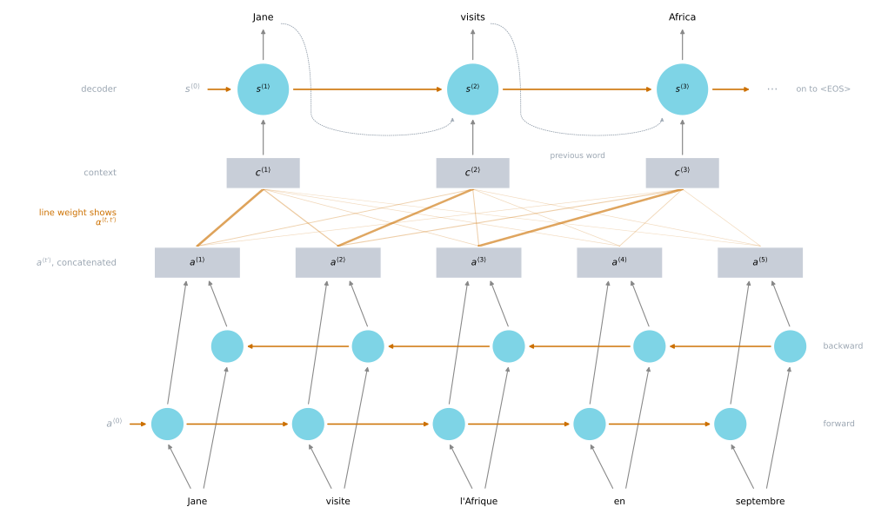
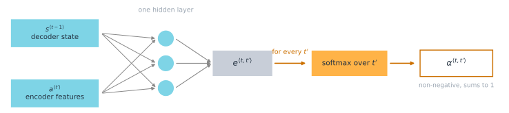
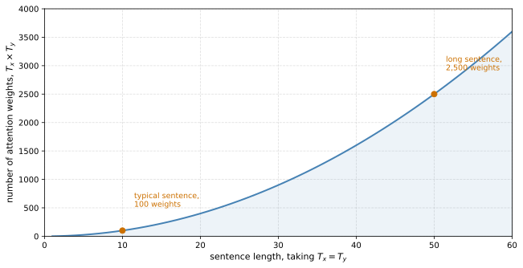
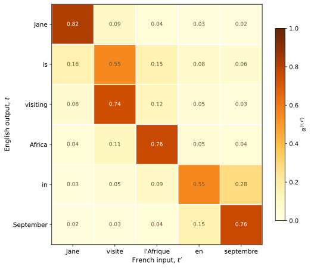

Attention Model
deep-learning
sequence-models
nlp
machine-translation
attention
context-vector
bidirectional-rnn
Why one encoding vector fails on long sentences, and how letting the decoder build a fresh weighted view of the input at every step fixes it.
Everything so far has used the encoder-decoder architecture, where one RNN reads a sentence and another writes one. There is a modification to it called the attention model that makes all of this work much better, and it has turned out to be one of the most influential ideas in deep learning.
What Goes Wrong on Long Sentences
Give the encoder a long French sentence.
Jane s’est rendue en Afrique en septembre dernier, a apprécié la culture et a rencontré beaucoup de gens merveilleux; elle est revenue en parlant comment son voyage était merveilleux, et elle me tente d’y aller aussi.
What you are asking it to do is read all 36 of those words, memorize them, and store the lot in the single activation vector it hands over. The decoder then has to produce the whole English translation from that one vector.
Jane went to Africa last September, and enjoyed the culture and met many wonderful people; she came back raving about how wonderful her trip was, and is tempting me to go too.
Thirty-six words in and thirty-two out, which is already past the length where the plain encoder-decoder architecture starts to struggle.
That is not how a human translator works. Nobody reads an entire paragraph, memorizes it, and then regurgitates a translation from scratch. A translator reads the first part, produces part of the translation, looks at the next part, produces a few more words, and works through the sentence piece by piece, because memorizing the whole thing is genuinely difficult.
The encoder-decoder architecture has the same difficulty. It does quite well on short sentences, reaching a relatively high BLEU score, and on very long sentences, maybe longer than 30 or 40 words, its performance comes down. An attention model, which translates a bit more like a human might by looking at part of the sentence at a time, does not show that dip.
The attention model is due to Bahdanau et al. (2014). It was developed for machine translation and spread to many other application areas.
Intuition
Use a short sentence to see the shape of it, Jane visite l'Afrique en septembre.
Start with a bidirectional RNN over the input. It is not doing word-for-word translation, so it has no outputs of its own. What it produces is, for each of the five positions, a rich set of features about the word there and the words around it.
Now generate the English with a second RNN on top. To avoid confusion with the activations below, call its hidden state \(s\) rather than \(a\), so the first step has state \(s^{\langle 1 \rangle}\) and should produce Jane.
Here is the question the whole model turns on. When generating that first word, what part of the French input should you be looking at? Mostly the first word, probably a few nearby ones, and certainly not the far end of the sentence.
So the model computes a set of attention weights. Write \(\alpha^{\langle 1, 1 \rangle}\) for how much attention to pay to the first piece of input when producing the first output word, \(\alpha^{\langle 1, 2 \rangle}\) for the second, and so on. Together they say what context \(c\) should be fed into the decoder to produce that word.
At the second step there is a new hidden state \(s^{\langle 2 \rangle}\) and a new set of weights, \(\alpha^{\langle 2, 1 \rangle}\), \(\alpha^{\langle 2, 2 \rangle}\) and the rest, saying how much of Jane, of visite, of l'Afrique and so on matters for producing visits. The word generated at the previous step is also an input. Then a third step with its own weights, and onward.
On a small screen, scroll horizontally to inspect the whole model.

The key intuition is that as the decoder marches forward generating one word at a time until it emits the end-of-sentence token, there are attention weights \(\alpha^{\langle t, t' \rangle}\) at every step telling it how much to pay attention to the \(t'\)-th French word when generating the \(t\)-th English word. In practice that lets it concentrate on a local region of the input for each output word, though the softmax runs over every position, so no part of the input is ever cut off entirely.
Context Vectors and Attention Weights
Now the details.
The input goes through a bidirectional RNN, and in practice GRU and LSTM cells are both used, with LSTM perhaps more common. At each position there is a forward activation and a backward activation. To keep the notation manageable, write \(a^{\langle t' \rangle}\) for the two of them concatenated together, so \(a^{\langle t' \rangle}\) is the feature vector for time step \(t'\). The index \(t'\) runs over the words of the French sentence, and \(t\) is reserved for the output.
On top sits a forward-only RNN with state \(s\) that generates the translation. At its first step it produces \(y^{\langle 1 \rangle}\) and takes as input a context \(c^{\langle 1 \rangle}\).
The context is a weighted sum of the input features.
\[c^{\langle t \rangle} = \sum_{t'} \alpha^{\langle t, t' \rangle} a^{\langle t' \rangle}\]
The weights are non-negative and sum to one over \(t'\).
\[\alpha^{\langle t, t' \rangle} \geq 0, \qquad \sum_{t'} \alpha^{\langle t, t' \rangle} = 1\]
So \(\alpha^{\langle t, t' \rangle}\) is the amount of attention that \(y^{\langle t \rangle}\) should pay to \(a^{\langle t' \rangle}\). At the next step there is a new set of weights, a new weighted sum, a new context, and the second output word.
That defines the context vectors in terms of the attention weights. What remains is to compute the weights themselves.
Computing the Weights
The weights come from a softmax, which is what guarantees they are non-negative and sum to one.
\[\alpha^{\langle t, t' \rangle} = \frac{\exp\left(e^{\langle t, t' \rangle}\right)}{\displaystyle\sum_{t''=1}^{T_x} \exp\left(e^{\langle t, t'' \rangle}\right)}\]
For every fixed \(t\), summing over \(t'\) gives 1.
The terms \(e^{\langle t, t' \rangle}\) come from a small neural network, usually with one hidden layer, because it has to be evaluated a great many times. It takes two inputs, \(s^{\langle t-1 \rangle}\) and \(a^{\langle t' \rangle}\).
The choice of those two inputs is the intuitive part. If you are deciding how much attention to pay to the activation at \(t'\), the thing it should depend on most is your own hidden state from the previous step, and the features of the word at \(t'\). You cannot use the current state \(s^{\langle t \rangle}\), because the context feeds into it and it has not been computed yet.
What the function of those two quantities should be is not obvious, so do not specify it. Train a small network to learn it, and trust backpropagation and gradient descent to find something sensible. If you implement the whole model and train it end to end, it works. The little network does a decent job of saying how much attention \(y^{\langle t \rangle}\) should pay to \(a^{\langle t' \rangle}\), and the model learns to attend to the right parts of the input automatically.

Cost
One downside is the cost. With \(T_x\) words in the input and \(T_y\) words in the output, one attention weight is computed for every pair of positions, so there are \(T_x \times T_y\) of them and the algorithm runs in \(O(T_x T_y)\) time. That is quadratic when the two lengths grow together, which for translation they roughly do. These are computed per sentence rather than learned, so they add nothing to the parameter count of the model.
For machine translation, where neither the input nor the output sentence is usually that long, quadratic cost is acceptable. There is research work on reducing it.

Beyond Translation
The idea is not confined to translation. In image captioning the task is to look at a picture and write a caption for it, and Xu et al. (2015) showed a very similar architecture that pays attention only to parts of the picture at a time while writing.
The programming exercise for this material applies attention to date normalization rather than to translation, taking a date written in any of several formats and producing a standardized one. Machine translation is a complicated problem to build from scratch, and date normalization exercises the same attention machinery on a smaller one.
One thing that is often worth doing is looking at the attention weights directly. Plot their magnitudes for a translation example, as the figure below does, and you find that they tend to be high for corresponding input and output words, which suggests the model is generally attending to the right part of the input when generating a specific word. Nothing supervised that. Learning where to pay attention was learned by backpropagation along with everything else.

is and visiting draw most of their weight from the single French word visite. These weights are hand-authored to show the pattern rather than read off a trained model.
NoteWhat You Should Remember
- A single encoding vector has to hold the whole input sentence, and that is what makes the plain encoder-decoder degrade on long inputs.
- Attention replaces it with a fresh context vector per output word, so nothing has to be memorized all at once.
- The context is a weighted sum of the bidirectional encoder features, and the weights come from a softmax so they are non-negative and sum to one.
- Each score is produced by a small network reading the previous decoder state and one input position’s features, and what that function should be is learned rather than specified.
- The current decoder state cannot be an input to that network, because the context is needed to compute it.
- The cost is \(T_x \times T_y\) attention weights, which is quadratic and acceptable for sentence-length inputs.
Review Questions
1. What does attention cost, how does that cost scale, and why is it tolerable for translation?
Answer
One attention weight is computed for every pair of input and output positions, so there are \(T_x \times T_y\) of them and the algorithm runs in \(O(T_x T_y)\) time. Since the two lengths tend to grow together in translation, that is quadratic in sentence length.
It is tolerable because sentences are short. Neither side of a translation is usually long enough for a quadratic term to hurt, so the cost stays acceptable in practice, and reducing it is an active research area rather than a blocker. Note also that the weights are computed per sentence rather than learned, so they add nothing to the parameter count of the model.
1. The small network that computes \(e^{\langle t, t' \rangle}\) takes \(s^{\langle t-1 \rangle}\) rather than \(s^{\langle t \rangle}\). Why can it not take the current state?
Answer
Because of the order in which things are computed. The context \(c^{\langle t \rangle}\) is an input to the decoder cell that produces \(s^{\langle t \rangle}\), so at the moment the attention weights are needed, \(s^{\langle t \rangle}\) does not exist yet. Using it would be circular. The previous state is the most recent summary of what the decoder has produced so far, which is the natural thing for the decision to depend on, and it is available.
1. Why is a softmax used to produce the attention weights rather than, say, the raw network outputs?
Answer
Because the context is a weighted sum of the encoder features and those weights have to behave like a distribution over input positions. The softmax enforces both required properties at once. Exponentiating makes every weight non-negative, so no input position can contribute negatively, and dividing by the sum over all \(t'\) makes the weights add to one for each fixed \(t\). That normalization is what makes the context an interpolation among the \(a^{\langle t' \rangle}\) rather than an arbitrary linear combination whose scale drifts with sentence length. It also makes attention competitive, since raising the weight on one position necessarily lowers the others.
1. Nobody labels which French word each English word should attend to. How does the model learn the alignment shown in the heatmap?
Answer
By backpropagation through the whole model, from the translation loss. The attention weights are not a separate supervised component. They are the output of a small network whose parameters sit in the same computational graph as the encoder and decoder, so the gradient of the translation error flows back through the weighted sum and into that network. Attending to the wrong input position produces a worse next word, which produces a larger loss, which pushes the scores. The alignment is therefore a byproduct of learning to translate well, and plotting it is a way of checking that the model attends where you would expect.
1. Which of these statements about \(\alpha^{\langle t, t' \rangle}\) are true? Select all that apply.
\(\sum_{t'} \alpha^{\langle t, t' \rangle} = 0\)
\(\alpha^{\langle t, t' \rangle}\) is the amount of attention \(y^{\langle t \rangle}\) should pay to \(a^{\langle t' \rangle}\)
We expect \(\alpha^{\langle t, t' \rangle}\) to be generally larger for values of \(a^{\langle t' \rangle}\) that are highly relevant to the value the network should output for \(y^{\langle t' \rangle}\)
\(\sum_{t'} \alpha^{\langle t, t' \rangle} = 1\)
Answer
b and d. The weights come out of a softmax, so they are non-negative and sum to one across \(t'\), which makes d right and a wrong. If they summed to zero the context vector would be a meaningless combination.
Options b and c differ only in a superscript, which is the whole point of the question. The weight \(\alpha^{\langle t, t' \rangle}\) carries two indices, and they are not interchangeable. The first says which output step is doing the attending and the second says which input step is being attended to. So the weight is large when input \(a^{\langle t' \rangle}\) is relevant to output \(y^{\langle t \rangle}\), which is b. Option c writes \(y^{\langle t' \rangle}\), pairing the input step with an output step of the same index, which is exactly the alignment attention exists to avoid assuming.
1. Which of these does \(s^{\langle t \rangle}\) depend on? Select all that apply.
\(s^{\langle t+1 \rangle}\)
\(\alpha^{\langle t, t' \rangle}\)
\(e^{\langle t, t' \rangle}\)
None of them, \(s^{\langle t \rangle}\) is independent of \(\alpha^{\langle t, t' \rangle}\) and \(e^{\langle t, t' \rangle}\)
Answer
b and c. Follow the chain backwards. The decoder state \(s^{\langle t \rangle}\) is computed from the context vector \(c^{\langle t \rangle}\), which is the weighted sum of the encoder activations using the weights \(\alpha^{\langle t, t' \rangle}\). Those weights are the softmax of the scores \(e^{\langle t, t' \rangle}\). So \(s^{\langle t \rangle}\) depends on both, which rules out d.
Option a is wrong because the decoder runs forward in time. Step \(t\) cannot depend on step \(t+1\), which has not happened yet. Note that the dependency does not run the other way either in the sense a would need, since it is \(s^{\langle t-1 \rangle}\), not \(s^{\langle t+1 \rangle}\), that feeds the network computing \(e^{\langle t, t' \rangle}\).
1. True or false. The attention model performs the same as the encoder-decoder model, no matter the sentence length.
Answer
False. On short sentences the two are close, because a single encoding vector can hold a short sentence without much loss. The encoder-decoder degrades as sentences get longer, since everything must still squeeze through that one fixed-size vector. Attention has no such ceiling, so its advantage is greatest exactly when the input length \(T_x\) is large.
References
- Bahdanau, D., Cho, K., & Bengio, Y. (2014). Neural machine translation by jointly learning to align and translate. arXiv. https://doi.org/10.48550/arXiv.1409.0473
- Xu, K., Ba, J., Kiros, R., Cho, K., Courville, A., Salakhutdinov, R., et al. (2015). Show, attend and tell: Neural image caption generation with visual attention. arXiv. https://doi.org/10.48550/arXiv.1502.03044